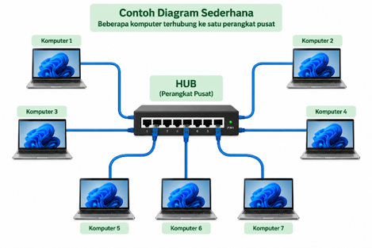

BAB 1 — Pengertian dan Fungsi Topologi Jaringan
Tujuan Pembelajaran Bab Ini
- Peserta didik mampu menjelaskan pengertian topologi jaringan.
- Peserta didik mampu menjelaskan fungsi topologi jaringan.
1.1 Menghubungkan dengan Materi Sebelumnya
Pada TP 2, kalian telah mengenal berbagai perangkat jaringan seperti router, switch, hub, access point, kabel UTP, dan konektor RJ-45. Kalian juga telah belajar memilih perangkat yang sesuai dengan kebutuhan. Namun, ada satu pertanyaan penting yang belum terjawab: setelah perangkat-perangkat itu tersedia, bagaimana cara menyusun dan menghubungkannya satu sama lain?
Perhatikan bahwa tiga buah komputer dan satu switch dapat dihubungkan dengan pola yang berbeda-beda. Bisa saja semua komputer dihubungkan ke switch, atau komputer dihubungkan berurutan satu sama lain, atau setiap komputer dihubungkan ke semua komputer lainnya. Pola hubungan yang berbeda ini akan menghasilkan jaringan dengan sifat yang berbeda pula: ada yang murah namun rapuh, ada yang mahal namun sangat tahan gangguan. Pola hubungan inilah yang disebut topologi jaringan.
1.2 Pengertian Topologi Jaringan
Topologi jaringan adalah pola, bentuk, atau susunan hubungan antarperangkat di dalam sebuah jaringan komputer. Topologi menggambarkan bagaimana komputer, switch, router, access point, dan media transmisi seperti kabel saling terhubung satu sama lain untuk membentuk satu kesatuan jaringan.
Kata "topologi" sendiri berasal dari kata yang berarti "bentuk" atau "susunan tempat". Jadi, ketika seseorang bertanya "topologi apa yang digunakan jaringan ini?", sebenarnya ia sedang menanyakan "bagaimana bentuk susunan hubungan perangkat di dalam jaringan ini?"
Perumpamaan Sederhana
Bayangkan jalan raya di sebuah kota. Ada kota yang jalannya berbentuk satu jalur panjang dengan rumah-rumah di kiri-kanannya. Ada kota yang semua jalannya mengarah ke satu alun-alun di tengah. Ada pula kota yang jalannya melingkar mengelilingi kota.
Rumah-rumah dan jalan adalah 'perangkat' dan 'kabel'; sedangkan bentuk susunan jalannya itulah yang disebut 'topologi'. Kota dengan bentuk jalan berbeda akan memiliki kelebihan dan kekurangan yang berbeda pula, persis seperti jaringan komputer.
1.3 Fungsi Topologi Jaringan
Mengapa topologi perlu ditentukan terlebih dahulu sebelum jaringan dibangun? Berikut lima fungsi penting topologi jaringan.
a. Merencanakan Hubungan Antarperangkat
Topologi menjadi "peta" yang menunjukkan perangkat mana terhubung ke perangkat mana. Tanpa peta ini, pemasangan jaringan akan dilakukan secara asal dan berpotensi menimbulkan kesalahan.
b. Menentukan Kebutuhan Kabel dan Perangkat
Dari topologi yang dipilih, kita dapat menghitung berapa banyak kabel, konektor, dan perangkat pusat yang dibutuhkan. Topologi yang berbeda membutuhkan jumlah kabel yang sangat berbeda meskipun jumlah komputernya sama.
c. Memudahkan Pemeliharaan dan Perbaikan
Ketika terjadi gangguan, teknisi dapat melihat diagram topologi untuk menelusuri bagian mana yang bermasalah, tanpa harus memeriksa seluruh jaringan satu per satu.
d. Memperkirakan Dampak Gangguan
Setiap topologi memiliki tingkat ketahanan yang berbeda. Dengan mengetahui topologi yang digunakan, kita dapat memperkirakan apa yang akan terjadi jika satu kabel putus atau satu perangkat rusak.
e. Merencanakan Pengembangan Jaringan
Topologi membantu kita memperkirakan seberapa mudah jaringan dapat diperbesar di kemudian hari, misalnya ketika jumlah Chromebook di sekolah kita bertambah dari sebelas menjadi lebih banyak.
1.4 Membaca Sebuah Diagram Topologi
Diagram topologi adalah gambar yang menunjukkan susunan hubungan perangkat. Dalam membaca diagram topologi, perhatikan tiga hal berikut: (1) perangkat apa saja yang ada, ditandai dengan kotak atau simbol; (2) garis penghubung, yang menunjukkan adanya hubungan antarperangkat; dan (3) arah hubungan, yang menunjukkan ke mana data mengalir.
Sebagai contoh, perhatikan diagram sederhana berikut yang menggambarkan hubungan antara satu perangkat pusat dengan beberapa komputer.

Dari diagram di atas, kita dapat membaca bahwa terdapat satu perangkat pusat berupa switch atau hub, serta enam komputer yang masing-masing terhubung langsung ke perangkat pusat tersebut menggunakan kabel. Tidak ada komputer yang terhubung langsung ke komputer lain; semua hubungan harus melewati perangkat pusat terlebih dahulu.
1.5 Kegiatan Peserta Didik — LKPD 1.1
Gambarkan hubungan antara satu router, satu switch, dan tiga komputer/Chromebook pada buku tulis kalian.
Kemudian, lengkapi tabel identifikasi di bawah ini berdasarkan gambar yang telah kalian buat.
| Perangkat | Terhubung dengan | Fungsi dalam Jaringan |
|---|---|---|
Rangkuman Bab 1
- Topologi jaringan adalah pola, bentuk, atau susunan hubungan antarperangkat dalam sebuah jaringan komputer.
- Lima fungsi topologi: merencanakan hubungan antarperangkat, menentukan kebutuhan kabel dan perangkat, memudahkan pemeliharaan, memperkirakan dampak gangguan, dan merencanakan pengembangan jaringan.
- Diagram topologi dibaca dengan memperhatikan perangkat yang ada, garis penghubung, dan arah hubungan data.
Latihan Soal Bab 1
- Jelaskan dengan bahasa kalian sendiri, apa yang dimaksud dengan topologi jaringan!
- Mengapa topologi perlu ditentukan sebelum sebuah jaringan dibangun?
- Sebutkan dan jelaskan lima fungsi topologi jaringan!
- Sebutkan tiga hal yang perlu diperhatikan saat membaca sebuah diagram topologi!
- Perhatikan Gambar 1.1. Jika komputer PC 1 ingin mengirim data ke PC 4, melalui perangkat apa data tersebut harus lewat? Jelaskan!